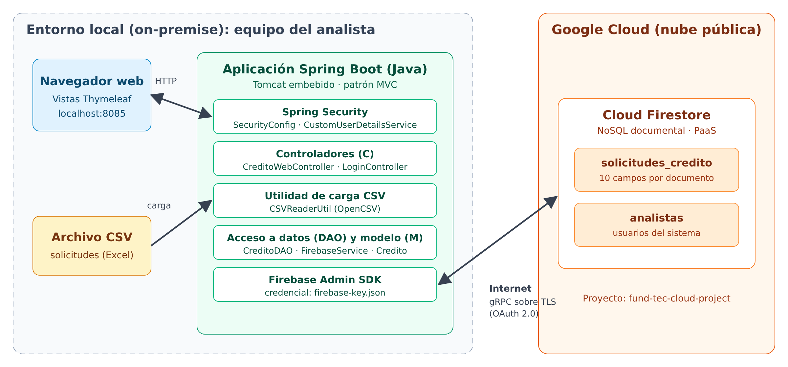

Funcionalidades
Carga masiva desde CSV
Lee el archivo con OpenCSV, valida y convierte cada columna, e inserta los registros en la colección solicitudes_credito.
Consulta por cédula
Busca la solicitud en Firestore y precarga el formulario con la cédula bloqueada.
Edición y creación
Actualiza o registra solicitudes desde el formulario de captura.
Eliminación con confirmación
Borra registros desde la tabla de datos tras una alerta de confirmación.
Acceso seguro
Spring Security valida a los analistas contra la colección analistas.
Arquitectura

Ejecución local
La aplicación necesita una llave de cuenta de servicio de Firebase (firebase-key.json) en la raíz del proyecto. Por eso no se publica en este sitio: GitHub Pages solo sirve contenido estático.
git clone https://github.com/gadarangoa/fintech-app.git
cd fintech-app
cp ~/Downloads/<llave-descargada>.json firebase-key.json
./mvnw clean package
java -jar target/FintechWebMVC-0.0.1-SNAPSHOT.jar
# Abrir http://localhost:8085Pruebas automatizadas
Estado de las pruebas E2E: {{ESTADO_E2E}}
| ID | Caso de prueba | Resultado esperado |
|---|---|---|
| CP-01 | Acceder a /creditos sin sesión | Redirección a /login |
| CP-02 | Iniciar sesión con contraseña incorrecta | Mensaje de error |
| CP-03 | Iniciar sesión con un analista registrado | Acceso al panel principal |
| CP-04 | Cargar datos/solicitudes_credito.csv | Los 10 registros aparecen en la tabla |
| CP-05 | Buscar la cédula 1078123403 | Datos de la solicitud y cédula bloqueada |
| CP-06 | Buscar una cédula inexistente | Sin resultados |
| CP-07 | Editar monto y aprobación | Monto $4000000 y estado APROBADO |
| CP-08 | Crear la solicitud 1078123499 | La solicitud aparece en la tabla |
| CP-09 | Eliminar la solicitud 1078123499 | Confirmación y registro eliminado |
Evidencias
 CP-01 · Inicio de sesión
CP-01 · Inicio de sesión
 CP-02 · Credenciales rechazadas
CP-02 · Credenciales rechazadas
 CP-03 · Panel principal
CP-03 · Panel principal
 CP-04 · Tabla tras cargar el CSV
CP-04 · Tabla tras cargar el CSV
 CP-05 · Consulta por cédula
CP-05 · Consulta por cédula
 CP-06 · Cédula inexistente
CP-06 · Cédula inexistente
 CP-07 · Formulario de edición
CP-07 · Formulario de edición
 CP-07 · Resultado de la edición
CP-07 · Resultado de la edición
 CP-08 · Formulario de creación
CP-08 · Formulario de creación
 CP-08 · Nueva solicitud en la tabla
CP-08 · Nueva solicitud en la tabla
 CP-09 · Tabla tras eliminar
CP-09 · Tabla tras eliminar